04.30.2007 16:37
NOAA in Second Life
NOAA LAB OPENS 3-D EARTH SITE IN ONLINE VIRTUAL WORLD [noaa.gov]
April 30, 2007 - Soar through a hurricane on the wing of a research aircraft, rise gently through the atmosphere atop a weather balloon or search for a hidden underwater cave on a side trip from a NOAA submersible. These and other virtual adventures are attracting large numbers of "avatars," or virtual selves, to one of the first government-sponsored, Earth-science "islands" in the rapidly growing online world of Second Life. The NOAA Earth System Research Lab developed the site for users to have the experiences in the virtual world they may not have in the physical world, and learn about the cutting-edge science that NOAA conducts regularly.
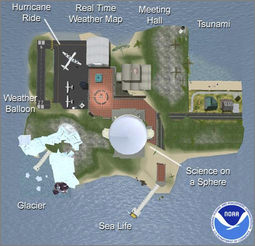
04.30.2007 11:57
NOAA CO-OPS and SOAP status - currently down
It appears that both the OpenDap/Dods and
SOAP (using
Apache Axis) services are currently down. I am getting these two
errors:
http://opendap.co-ops.nos.noaa.gov/axis/ Bad Gateway The proxy server received an invalid response from an upstream server. Apache Server at opendap.co-ops.nos.noaa.gov Port 80and this one from my opendap client service...
dap.exceptions.ClientError: 'Unable to open dataset.'
04.29.2007 23:43
The lost shipwreck of York
This evening, Val, Alice, and I went looking for the ship wreck of
York Maine. We didn't find anything but we must have been standing
right over it!
Shipwreck resurfaces in York [seacoastonline.com]
Shipwreck resurfaces in York [seacoastonline.com]
04.28.2007 20:06
unittest++ 1.3 sort of working
I just tried out my unittest++-1.3 info file. My old example works but I wanted to give reporters a try. No luck.
#include <fstream>
#include "UnitTest++.h"
#include "XmlTestReporter.h"
int main(int, char const *[])
{
std::ofstream f("tests.xml");
UnitTest::XmlTestReporter reporter(f);
return UnitTest::RunAllTests(reporter,
UnitTest::Test::GetTestList(),
NULL,
0);
}
When I try to compile it, no go. Maybe I missed another library?
make try3 g++ -I/sw/include/UnitTest++ -Wall -Wimplicit -pedantic -W -Wredundant-decls -g3 -O0 -L/sw/lib -lUnitTest++ try3.C -o try3 /usr/bin/ld: Undefined symbols: UnitTest::RunAllTests(UnitTest::TestReporter&, UnitTest::TestList const&, char const*, int) UnitTest::TestReporter::~TestReporter() UnitTest::XmlTestReporter::XmlTestReporter(std::basic_ostream<char, std::char_traits<char> >&) UnitTest::Test::GetTestList() vtable for UnitTest::XmlTestReporter vtable for UnitTest::DeferredTestReporter collect2: ld returned 1 exit statusIt seems like I've run into vtable issues before, but I can't remember what was up!
nm /sw/lib/libUnitTest++ | grep RunAllTests ... echo '__ZN8UnitTest11RunAllTestsERNS_12TestReporterERKNS_8TestListEPKci' | c++filt UnitTest::RunAllTests(UnitTest::TestReporter&, UnitTest::TestList const&, char const*, int)
04.28.2007 19:53
cia.vc
CIA.vc watches version control repositories for open source projects.
You can watch me work on fink (slower than watching grass grow): http://cia.vc/stats/author/goatbar
I am definitely not one of the bigger contributers. I only average
one commit per week.
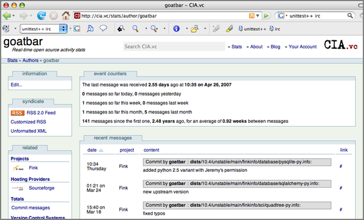
04.28.2007 16:37
Seafloor mapping
To contrast to opendap, Google's results for "seafloor mapping" do not
list the Center for Coastal and Ocean Mapping (CCOM) within the first
100 links. People have also been complaining that they can not find
the Law of the Sea Data. CCOM is, in my oppinion, a very important
organization for sea floor mapping and we do release the Law of the
Sea data! So here are the critical links!
The Law of the Sea mapping program has some fantastic data. If your research includes these regions, you should definitely grab the bathymetry and backscatter. Get the Law of the Sea data.
CCOM does Seafloor Mapping. Maybe the research page is a better link for seafloor mapping
The Law of the Sea mapping program has some fantastic data. If your research includes these regions, you should definitely grab the bathymetry and backscatter. Get the Law of the Sea data.
CCOM does Seafloor Mapping. Maybe the research page is a better link for seafloor mapping
04.28.2007 16:25
opendap exploit and other opendap things
I am amused to find the thread I started on the NOAA OpenDAP server is
now the top hit for OpenDAP on Google Groups.
Which brings me to why I was search on opendap. The NOAA OpenDAP waterlevel server seems to be down. Thanks to Barry G. for pointing this out. I get a continualy stream of errors that make it difficult to distinguish between when this is just one station off line or if there is something that I need to directly address. I need to spiffy up the error checking on my scripts.
The new error that I have been getting from my cron job:
From opendap.org:
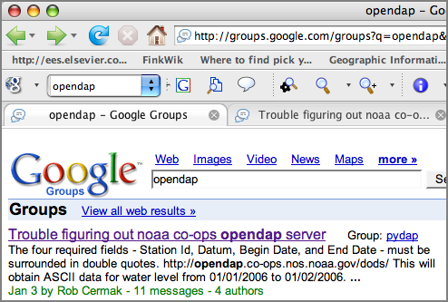
Which brings me to why I was search on opendap. The NOAA OpenDAP waterlevel server seems to be down. Thanks to Barry G. for pointing this out. I get a continualy stream of errors that make it difficult to distinguish between when this is just one station off line or if there is something that I need to directly address. I need to spiffy up the error checking on my scripts.
The new error that I have been getting from my cron job:
File "/Users/schwehr/production/src/noaadata/noaadata/waterlevel_dap.py", line 36, in <module>
waterlevelDataset=dap.client.open(datasetURL)
File "/sw/lib/python2.5/site-packages/dap/client.py", line 30, in open
raise ClientError("Unable to open dataset.")
dap.exceptions.ClientError: 'Unable to open dataset.'
From opendap.org:
Important security message 27 April 2007 . Update: We have posted a patch for the exploit. The patch is available as a text file that explains how to modify the server so the exploit will no longer work. . Addendum: If you are patching your server and do not find the get_url() function in DODS_Dispatch.pm, then your server is not affected by the exploit - you're safe - and there's no need to patch. You should still consider the upgrade to Hyrax. 25 April 2007 . A problem has been found in the Server3 software which provides a way for people to run commands on a computer running the server. The best fix for this problem is to upgrade to Hyrax (aka. Server4). For those who want to continue running the old server, we will produce a patch which you can install, although the design of the new server is so much superior with respect to system security that I would urge everyone to carefully weigh the benefits of installing a patched version of the old server. Regardless of whether you choose to upgrade to Hyrax or patch your server, you should seriously consider stopping any instances of Server3 you are now running until you have addressed this issue.
04.28.2007 10:37
First Batch of Seeds
Now that I have a garden, I'm giving it a go at starting plants from
seed. Thanks to those who have contributed seeds! My first batch is
snow peas and several types of sunflowers. The picture below are ones
I started one week ago. Today, I started another container of
sunflowers, but there is nothing to see there so far.
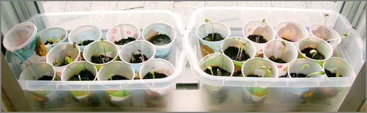
04.26.2007 12:05
Repackaging datasets - SBNMS
I've been working on repackaging a couple of publicly datasets to make
them easier to access. I've put both Fledermaus files and GMT grd
files up on the web. These data products cover the Stellwagen Bank National Marine
Sanctuary
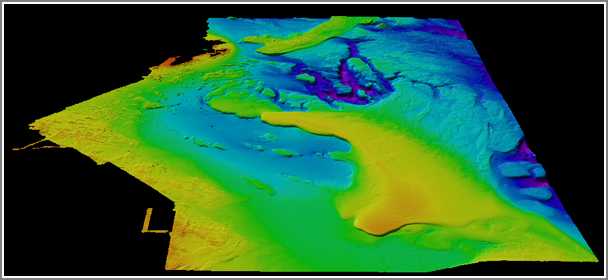
04.25.2007 15:57
Converting from utm to geographic with invproj
I just discovered a nice option in proj. You can set the output
format to be nicer with -f. The default style is not so helpful.
head stellwagenUTM.dtm.xyz | invproj +proj=utm +zone=19 70d15'44.167"W 42d5'0.164"N -58.84 70d15'43.731"W 42d5'0.169"N -58.82 70d15'43.295"W 42d5'0.174"N -58.80 70d15'42.859"W 42d5'0.179"N -58.80 70d15'42.423"W 42d5'0.183"N -58.83 70d15'41.986"W 42d5'0.188"N -58.87 70d15'41.55"W 42d5'0.193"N -58.89 70d15'41.114"W 42d5'0.198"N -58.88 70d15'40.678"W 42d5'0.203"N -58.88 70d15'40.241"W 42d5'0.207"N -58.93This is more like what I need:
head stellwagenUTM.dtm.xyz | invproj +proj=utm +zone=19 -f "%.8f" -70.26226874 42.08337894 -58.84 -70.26214762 42.08338027 -58.82 -70.26202639 42.08338160 -58.80 -70.26190527 42.08338293 -58.80 -70.26178403 42.08338427 -58.83 -70.26166291 42.08338560 -58.87 -70.26154167 42.08338693 -58.89 -70.26142044 42.08338826 -58.88 -70.26129932 42.08338960 -58.88 -70.26117808 42.08339093 -58.93
04.25.2007 10:17
JPole versus Whip antennas
Last week I swapped from a 144MHz whip to a 160MHz JPole on the AIS
receiver at the Jackson Estuarine Lab (JEL; pos -70.8647, 43.092291).
With just 6 days of data for the JPole and 2 months for the whip, the
JPole has received position messages from much farther away. I
haven't compared which ships were in the area. It is therefor
possible that a ship with a much better tranmitter/antenna/height came
through. This test leads me to believe that although the whip is
convenient, it is not very good.
Pardon the cheesy gnuplot graphic without shorelines or any other reference points beside JEL.
Pardon the cheesy gnuplot graphic without shorelines or any other reference points beside JEL.
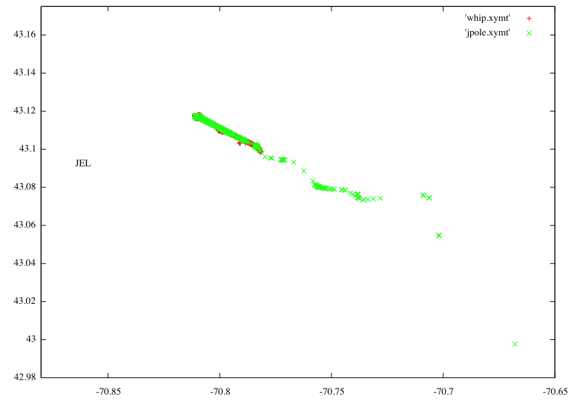
04.25.2007 09:29
Shipplotter log format
I just got a bit of log data from someone who runs ShipPlotter.
Here is a sample of the semacolon separated data:
030453200;under way ;000°'; 0.0kt;36.857850N;76.322700W; 26.0°;080°;42s; 070414 132235;serial#1 367216000;moored ;000°'; 4.0kt;36.955937N;76.340700W; 7.1°;100°;44s; 070414 132235;serial#1 000061616;binary;dac 55;func 58; 070414 132236;serial#1 367834000;(7234430);(NAKL );GORDON ;Cargo ship ;-> Dec22 04:00 NEWPORT NEWS ;0 0 10.4 0 0; 070414 132254;serial#1 003669702;Data link management; offset:124 slots:5 timeout:7 increment:150; offset:565 slots:8 timeout:0 increment:833; 070414 132251;serial#1 003669730;Base station 2007-04-14;13:21:59;36.844297N;76.304700W;fix 1; 070414 132538;serial#1Quite different than the raw logs that come out of the receiver! This also has the USCG style ration and UTC timestamp.
!AIVDM,1,1,,B,34Wv145000rsnopHbuoP0:;@0000,0*62,rnhjel,1177463080.04 !AIVDM,1,1,,A,34Wv145000rsnntHbur00:;@0000,0*19,rnhjel,1177463260.2 !AIVDM,2,1,3,A,54Wv143L1sSQ`<@?800MU1=Dn0<Dq@DppT4h0016EPI@@5;TNIl3lU4k,0*23,rnhjel,1177463297.04 !AIVDM,2,2,3,A,CmE283cR;P00000,2*2F,rnhjel,1177463297.04 !AIVDM,2,1,4,B,54Wv143L1sSQ`<@?800MU1=Dn0<Dq@DppT4h0016EPI@@5;TNIl3lU4k,0*27,rnhjel,1177463657.12 !AIVDM,2,2,4,B,CmE283cR;P00000,2*2B,rnhjel,1177463657.12 !AIVDM,1,1,,B,34Wv145000rsnoTHbuoP0:;@0000,0*46,rnhjel,1177463800.07
04.25.2007 07:19
unittest++ 1.3
I have yet to check this out, but the new release came out late last
night...
From: Noeal Subject: [unittest-cpp-devel] Version 1.3 released Date: April 24, 2007 12:56:13 AM EDT Reply-To: unittest-cpp-devel@lists.sourceforge.net
For those of you who like to get the official releases, as of 5 minutes ago, version 1.3 is packaged and available in Sourceforge (might still have to propagate to all the mirrors though).
For everybody else, we strongly recommend you use the latest version in the Subversion repository. You're guaranteed to have a better code by always keeping up to date.
04.24.2007 13:56
gnuplot xtics new tricks
Tics for tricks... Check out what Stephen S. figured out for the
x-axis with gnuplot. You can now have the axes labeled by text
strings. Gnuplot 4.2 is a much better thing.
The source follows. I've commented out, but left in a few other useful features.
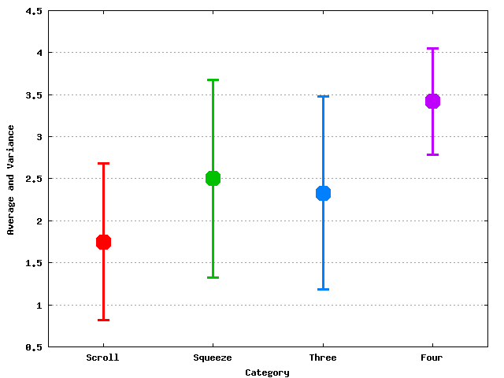
The source follows. I've commented out, but left in a few other useful features.
#!/usr/bin/env gnuplot
#
#set terminal gif
#set output 'plot.gif'
set terminal svg size 800 600
set output "plot.svg"
#show terminal
#
set xrange [0.5:4.5]
set key off
set xlabel 'Category'
set ylabel 'Average and Variance'
#
set grid y
#
set xtics 1
show label
set xtics ("Scroll" 1, "Squeeze" 2, "Three" 3, "Four" 4)
set bars 3
set pointsize 3
#
plot 'one.dat' with errorbars lw 3 pt 7, \
'two.dat' with errorbars lw 3 pt 7, \
'three.dat' with errorbars lw 3 pt 7, \
'four.dat' with errorbars lw 3 pt 7
#
#show plot
#
#set terminal x11
#replot
#
#pause -1 "Hit return to finish"
04.23.2007 11:21
Python book by John Zelle
I have a copy now of Python Programming: An Introduction to
Computer Science by John Zelle. It's going to the top of my
reading list and I promise to write up a review when I have gotten
through it.
04.22.2007 11:06
gnuplot index
gnuplot has an index function that lets you plot a subsection of data
in a file. Yesterday, I tried to get that to work and did not
understand why. Turns out that two blank lines between each section
are required.
cat << EOF > foo.dat 1 3 2 1 3 2.5
9 4 10 -1 11 6 EOF gnuplot plot 'foo.dat' index 0 with l
04.22.2007 09:28
Another reason to go solar
The power grid in NH is far from stable. It's 9 AM on Sunday morning,
and we are without power again. This makes me think harder about
getting some sort of solar system for my house, even if it is a small
one. It doesn't take much to keep me functioning at a minimum level.
I just hope the outage is only in the area that I live and does not include UNH or Jackson Lab where I have dataloggers running.
I just hope the outage is only in the area that I live and does not include UNH or Jackson Lab where I have dataloggers running.
04.20.2007 11:58
Python to Excel (.xls)
I just tried out pyExcelerator to create Excel spreadsheets from
Python. It works pretty well even if the code has not been updated in
a couple years...
The source:
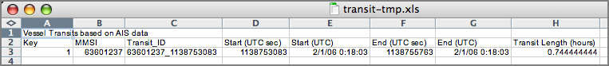
The source:
#!/usr/bin/env python
from pyExcelerator import *
from datetime import datetime
#
w = Workbook()
ws = w.add_sheet('Transits')
#
######################################################################
#
row=0
col=0
ws.write(row,col,'Vessel Transits based on AIS data');col+=1
#
######################################################################
# Title the columns
row+=1
col=0
#
ws.write(row,col,'Key');col+=1
ws.write(row,col,'MMSI');col+=1
ws.write(row,col,'Transit_ID');col+=1
ws.write(row,col,'Start (UTC sec)');col+=1
ws.write(row,col,'Start (UTC)');col+=1
ws.write(row,col,'End (UTC sec)');col+=1
ws.write(row,col,'End (UTC)');col+=1
ws.write(row,col,'Transit Length (hours)');col+=1
#
######################################################################
#
dateTimeStyle = XFStyle()
dateTimeStyle.num_format_str = 'M/D/YY h:mm:ss'
#
######################################################################
# This will loop through all the transits and add them to the spreadsheet
row+=1
col=0
#
key=1
mmsi=63601237
timestamp = 1138753083
dt=datetime.utcfromtimestamp(timestamp)
timestamp_end = 1138755763
dt_end=datetime.utcfromtimestamp(timestamp)
#
ws.write(row,col,key); col+=1
ws.write(row,col,mmsi); col+=1
ws.write(row,col,str(mmsi)+'_'+str(timestamp)); col+=1
ws.write(row,col,timestamp); col+=1
ws.write(row,col,dt,dateTimeStyle); col+=1
ws.write(row,col,timestamp_end); col+=1
ws.write(row,col,dt_end,dateTimeStyle); col+=1
ws.write(row,col,(timestamp_end-timestamp)/3600.) ; col+=1
#
######################################################################
# Done, so save the workbook
#
w.save('transit-tmp.xls')
04.20.2007 11:52
Google Earth - CA Marine Protected Areas
New California Marine Protected Areas in Google Earth [gearthblog.com]
MPAsSouthCentralCoast.kmz [oceanconservancy.org]
MPAsSouthCentralCoast.kmz [oceanconservancy.org]
04.20.2007 10:30
networkx
networkX is potentially a
very useful python package for some of the research problems that many of us
here have been thinking about.
Features:
Features:
- Allows for 1M+ nodes, 10M+ edges
- Includes standard graph-theoretic and statistical physics functions
- Easy exchange of network algorithms between applications, disciplines, and platforms
- Includes many classic graphs and synthetic networks
- Nodes and edges can be "anything" (e.g. time-series, text, images, XML records)
- Exploits existing code from high-quality legacy software in C, C++, Fortran, etc.
- Open source (encourages community input)
- Unit-tested
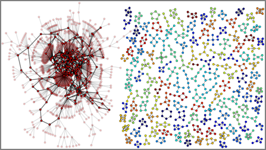
04.19.2007 09:58
UnitTest++ simple example and fink info file
I finally got around to trying out UnitTest++ with some of my code. I
am really in need of testing right now in some of my development.
Somehow, I had the impression that using ut++ might be a bit
complicated. For simple tests, it is really easy! Check this out...
#include <UnitTest++.h>
// Some tests
TEST(Boom) {
CHECK(false);
}
TEST(Yeah) {
CHECK(true);
}
// Make it all go from main
int main(int, char *[]) {
return UnitTest::RunAllTests();
}
Now compiling and running the tests. One test should success and other fail.
g++ try-ut.cxx -o try-ut -I/sw/include/UnitTest++ -L/sw/lib -lUnitTest++ /try-ut try-ut.cxx:4: error: Failure in Boom: false FAILURE: 1 out of 2 tests failed (1 failures). Test time: 0.00 seconds.I have put together an info file for Mac OSX fink users: unittest++.info
04.19.2007 08:33
Yet another reason to turn up warnings in gcc
I have the misfortune of being back to writing C++ code. Coding in
python is fun. C++ likes mess with you if you let down your guard.
My latest was an unexplained segfault. I brought up the debugger and
what? My looping variable looked corrupted, but why? This code is
not very exciting. It has been a few months since I really coded C++.
Apparently that is enough to get me introuble. I used -Wall and fixed
all the warnings...
Update: Lookst at the dynamic_bitset documentation, I see that it does not provide iterators, so I am back to coding something really strange.
g++ -Wall -I/sw/include -g -o bitvector BitVector.cxx -DWITH_MAINThat should be pretty safe right? It built without complaints. Then I decided to go back to an old makefile (sorry Roland!! I promise I will switch to scons real soon now).
++ -Wall -Wimplicit -pedantic -W -Wredundant-decls -I/sw/include -g3 -O0 -D_GLIBCXX_DEBUG -o bitvector BitVector.cxx -DWITH_MAIN BitVector.cxx: In member function 'void BitVector::print()': BitVector.cxx:62: warning: comparison of unsigned expression >= 0 is always trueWhoops! I was't thinking. unsigned values like site_t can never be less than 0!! No wonder bad things happen!
/usr/include/c++/4.0.0/debug/vector:192:error: attempt to subscript
container with out-of-bounds index 134217727, but container only holds 1
elements.
Objects involved in the operation:
sequence "this" @ 0x0xbfffe714 {
type = N15__gnu_debug_def6vectorImSaImEEE;
}
000101000001
Abort trap
The moral is... don't do this:
for (size_t i=bitSize-1; i>=0 ; i--) {
cout << (bits[i]?'1':'0');
}
Perhaps if I had just used an iterator, this would never have
happened! Back to working on why my algorithm doesn't work.
Update: Lookst at the dynamic_bitset documentation, I see that it does not provide iterators, so I am back to coding something really strange.
04.19.2007 07:24
Maritime Tech Center
Maritime Technology Information Center Opens
Apparently this is in West Bethesda, Maryland.
It may lack a hull and a propeller, but the newly built Maritime Technology Information Center is destined to play an important role in the fleet's future, said Tom Warring, center spokesman. The maritime technology information center is located on a campus filled with unique Navy research and design facilities, including the David Taylor Model Basin where artificial waves test the ocean-going stability of ship designs. Built for $12 million, the 50,000-square-foot conference center features state-of-the-art audio-visual technology. Planned down to the tiniest detail over five years, it allows Navy, industry and academia to easily share information and data about ships, ship systems and maritime engineering.
Apparently this is in West Bethesda, Maryland.
04.18.2007 11:36
GOA Report on LNG Tankers
http://energycommerce.house.gov/Press_110/GAOfeb2007.pdf
GAO Report Highlights Incomplete Research by Government on the Risk from Attacks on LNG Tankers [house.gov]
GAO Report Highlights Incomplete Research by Government on the Risk from Attacks on LNG Tankers [house.gov]
Dingell and Barton Announce Hearings on LNG Tanker Security Safety and Licensing . A Government Accountability Office (GAO) report, Public Safety Consequences of a Terrorist Attack on a Tanker Carrying Liquefied Natural Gas, released today by top members of the Committee on Energy and Commerce highlights incomplete research by the Government on the effects of a terrorist attack on Liquefied Natural Gas (LNG) tankers. GAO urges the Department of Energy (DOE) to conduct new studies on public impacts from a major fire or vapor cloud release from an attack on an LNG tanker. This GAO report coincides with a projected 400 percent increase in LNG imports over the next 10 years at a time when energy companies have submitted 32 applications to build new terminals in 10 states and five off shore areas. ...
04.18.2007 11:00
Better gnuplotting
Thanks to Val, I went and looked up how to convert from seconds since
the Epoch in UTC to date/time. Here is what I did:
Ah, and the script...
set xdata time set format x "%d-%b-%Y" set timefmt "%s" plot 'temp.dat' using 1:2 with l, 'waterlevel.dat' using 1:2 with l
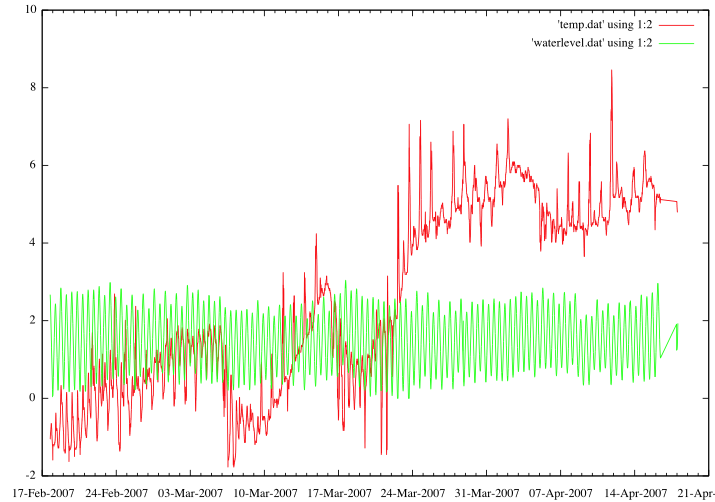
Ah, and the script...
#!/usr/bin/env python
'Quick hack to allow for plotting'
import sys
w = file('waterlevel.dat','w')
t = file('temp.dat','w')
timestamp = None
for filename in sys.argv[1:]:
print filename
for line in file(filename):
#print line
if line[0] == '#' and line[2] in [str(i) for i in range(10) ]:
# found timestamp
timestamp = line[2:].strip().split('.')[0]
continue
if -1 != line.find('level'):
w.write(timestamp+' '+line.split()[3]+'\n')
continue
if -1 != line.find('temp'):
t.write(timestamp+' '+line.split()[3]+'\n')
And here is what my not so nice format looks like...
# 1176861556.7 Date/Time: 7.04.18 2:53:04 # 1176861556.75 01 Reference 736 # 1176861560.75 02 Water level 1.93 m # 1176861564.78 03 Water temperature 4.80 Deg.C
04.18.2007 08:25
Water level and temp at JEL
The plotting needs work, but here are the data collected since Feb
2007 and the inset shows Apr 10-18. Looks like the data logging box
stayed up in the storm, but the data stream stopped. Units are meters
and degrees C.
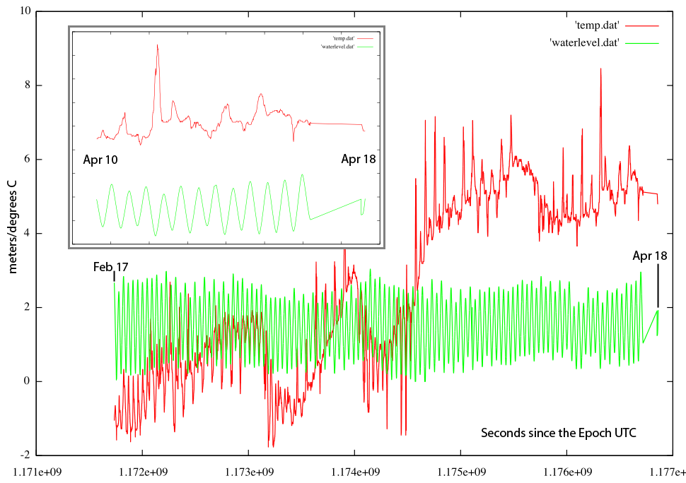
04.17.2007 12:18
EarthNC - not on win64
Just got my copy of EarthNC. Looks like EarthNC does not work on
Win64. I will probably have to make some modifications to get it to
work on my Mac, which is where I want to use it.
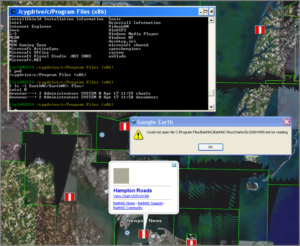
04.16.2007 12:49
gnuplot on mac - aquaterm vrs x11
I was pleasantly surprised today to get a cleaner looking plot today
when using gnuplot. This was great until I wanted to rotate my splot
3D output. It seems that you can't rotate things in aquaterm. The
solution is to revert back to the older x11 terminal. With that, I
get the old crummier looking output, but I can easily rotate it with
the mouse.
gnuplot set term x11 splot 'mydata.xyz' with l
04.16.2007 10:44
Teaching with Python
Teaching with
Python by Zelle looks very interesting. He has a textbook called
"Python Programming: An Introduction to Computer Science." This is
particularly interesting as the CS department here at UNH is debating
switching to Java as the first language. I'm not a Java person and
would advocate python over java.
I've only been teaching tutorials, so I wonder if they will send me an evaluation copy or not.
I've only been teaching tutorials, so I wonder if they will send me an evaluation copy or not.
04.14.2007 09:43
First try at using dynamic_bitset to support AIS in C++
This is as basic as it gets. I wanted to try out
boost::dynamic_bitset. It seems to work okay! No idea on speed or
long term code development issues, but this is a start.
#include <iostream>
#include <boost/dynamic_bitset.hpp>
using namespace boost;
int main (int, char*[]) {
const char c='1';
unsigned char val = c - 48;
if (val>=40) val -=8;
const dynamic_bitset<> bits(6,val);
std::cout << "bits: " << bits << std::endl;
return 0;
}
And running it:
# make g++ -o cais cais.C -Wall -g -I/sw/include # ./cais bits: 000001
04.13.2007 18:32
CCOM/JHC graduate
2nd from the left...
http://www.commerce.gov/opa/photo/NOAA/2007/4_13_JeffersonWreathCeremony/Gallery.html . Please check out the Department of Commerce's homepage where NOAA and Coast Survey's 200th anniversary are front and center as the result of a highly successful wreath-laying ceremony at the Jefferson Memorial this morning: . http://www.commerce.gov/index.html . Take a look particularly at his speech: http://www.commerce.gov/opa/speeches/Secretary_Gutierrez/2007/April/13_Gutierrez_NOAA_Wreath_Laying.html
04.13.2007 13:13
Fetch at CCOM/JHC
Our AUV (Fetch 3.5) is currently here at UNH before it heads back out
for another cruise. Roland and Robert were working with it today in
the tank. I missed the action shots, but here are two pictures from
after the tank tests.
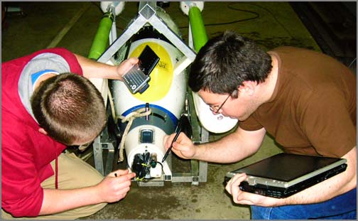
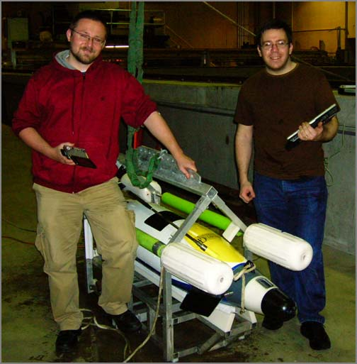
04.13.2007 08:02
C++ bit vector data structures
I have been looking at possible ways that I could get functionality
like that in the BitVector,
but with out the overhead of a pure python implementation. If I could
just choose between these two, then I would be super happy:
The options right now include std::vector,
std::bitset, and boost:dynamic_bitset<>.
std::vector currently is not a real STL container and people are
warning developers not to use it. If it were to loose its
special/funky status and become a normal container, it would be okay,
but use a lot of memory. std::bitset looks nice, but does requires
setting the vector size at compile time. The boost dynamic_bitset
appears to be very nice and additionally n2050
(2006) proposes to put it in the next C++ standard.
Right now boost tends to scare people off with its size. It did that to me until last year, but Brian Locke encouraged me to look at it for its matrix support. I was pleasantly surprised. I think at this point, dynamic_bitset looks like the way to go. Now for some spare cycles to get this coded up for a non python AIS and then maybe someday a cBitVector.
fast: from cBitVector import BitVector original: from BitVector import BitVectorRather than write it all myself, I have been thinking a bit about what existing C++ libraries could help me with keeping track of bits in a very standard way. I'd also like to be able to generate straight C++ for AIS messages from my XML definitions. I am starting to hit AIS parsing performance issues. Trying to crunch 20 GB of AIS NMEA strings takes way too long.
The options right now include std::vector
Right now boost tends to scare people off with its size. It did that to me until last year, but Brian Locke encouraged me to look at it for its matrix support. I was pleasantly surprised. I think at this point, dynamic_bitset looks like the way to go. Now for some spare cycles to get this coded up for a non python AIS and then maybe someday a cBitVector.
04.12.2007 08:35
The Natuical Institude - AIS Forum
Got this link from Crappy Class A AIS data, some stats [panbo.com]
The The Nautical Institude AIS Forum... a number of AIS papers for download...
The The Nautical Institude AIS Forum... a number of AIS papers for download...
- Automatic Identification System (AIS): A Human Factors Approach
- New MIN: AIS operational notification - safety of navigation. ACR/Nauticast AIS.
- AIS: Operator Feedback Analysed
- AIS as a tool for Safety of Navigation and Security - Improvement or not?
04.12.2007 08:24
NASA mostly open software
The license for this code is not good, but it is cool that NASA is
finally opening up code. Having to register on some federal website
is not my idea of fun as an end user. Wish they would release my old
code. I have to mention one package in particular that comes out of
the group I worked at back in the 90's. I used older versions of some
of this code on the Mars Exploration Rovers (MER) project back in 2004.
Vision Workbench(vw)
I don't think I will be able to put this package in fink directly with the license that it has. What I will probably have to do is just put the info files up someplace for people to put in their "local" packages area.
Vision Workbench(vw)
The VW was developed within the Autonomous Systems and Robotics area of the Inteligent Systems Division at NASA's Ames Research Center. It leverages the Intelligent Robotics Group's (IRG) extensive experience developing surface reconstruction and tools for planetary exploration---e.g. the Mars Pathfinder and Mars Exploration Rover missions---and rover autonomy. It has also been developed in collaboration with the Adaptive Control and Evolvable Systems (ACES) group, and draws on their experience developing computer vision techniques for autonomous vehicle control systems. . The VW is composed of several modules each of which provides a separate C++ library. The core library provides the basic image and pixel data types as well as a range of fundamental image processing operations. The other modules provided in this release are:...
- Math: geometric, numeric, and other mathematical types and functions
- GPU: accelerated image processing using commodity graphics hardware
- HDR: creating, processing, and compressing high dynamic range images
- InterestPoint: Detecting, tracking, and matching interest points
- Mosaic: compositing, blending, and manipulating 2D image mosaics
- Camera: camera models and related types and functions
- Cartography: tools for manipulating geospatially-referenced images
I don't think I will be able to put this package in fink directly with the license that it has. What I will probably have to do is just put the info files up someplace for people to put in their "local" packages area.
04.11.2007 15:26
Playing with materials in OpenInventor/Coin
Barry and I used simpleview from density to experiment with material
properties for use in Pydro. Here is an amusing little example.
#Inventor V2.1 ascii
Material {
ambientColor 0 1 0
#ambientColor 0.2 0.2 0.2
diffuseColor 0 0 0
specularColor 0 0 0
emissiveColor 0 0 0
shininess 0.2
transparency 0
}
Sphere { }
#
Material {
#ambientColor 1 0 0
ambientColor 0. .5 0.
diffuseColor 0 1. 0
specularColor 0 .4 0
emissiveColor 0 0 0
shininess 0.2
transparency 0
}
#
Translation { translation 0 0 10 }
Sphere { }
#
Translation { translation 0 0 10 }
Cube {}
I had to recompile simpleview with only one light source and then
produced this image...
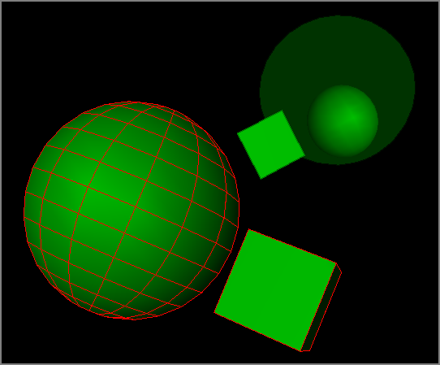
04.11.2007 08:12
gmt 4.2.0 is out
Dear GMT user- . We are pleased to announce the release of GMT version 4.2.0. For a complete list of enhancements and features, please see Chapter 1 in the Technical Reference & Cookbook or follow the RELEASES link on the updated GMT web page (http://gmt.soest.hawaii.edu). GMT 4.2.0 is a recommended upgrade for all users; it also fixes earlier Windows DLL problems in 4.1.4. . At this point, the US mirrors + Vienna have synced up, and we expect the others to follow within 24 hours. Note the Australia mirror is still down. . Sincerely, . The GMT Team
04.10.2007 17:15
pyro - Python Remote Objects
I have been working this week with pyro (python remote objects). Over the years, many integration tools have come across my path. These tools include MPI, RTI's NDDS, Unix RPC, RTC, TCA, Corba, raw sockets, multicast, broadcast, SysV IPC, etc. While pyro is not as powerful as some of the above, pyro is on the simple end of the complexity scale. It was reasonably easy to setup and get running and it can do the job I need, even if it is missing about nine tenths of the power of something like NDDS. We are using pyro to provide a simple integration pathway for data to come into pyro from AIS and other web sources.
Here are some snippets from my first experiences with pyro. I had a little bit of trouble with the installer. First, it wants to work in an interactive mode and ask some questions. That is not great for fink. I tried to set up the config file to do an automated install, but that seemed to have troubles. Here is my info file for fink: pyro-py.info. It needs some work before I am comfortable checking it into the fink public tree.
The documentation on the web is pretty good, but I had to tweak things just a bit to get the examples working. The examples come in a server.py and client.py pair. Here is the server.py. This one does not use the name server capability.
#!/usr/bin/env python
import Pyro.core
#
class JokeGen(Pyro.core.ObjBase):
def __init__(self):
Pyro.core.ObjBase.__init__(self)
def joke(self, name):
return "Sorry "+name+", I don't know any jokes."
#
Pyro.core.initServer()
daemon=Pyro.core.Daemon()
uri=daemon.connect(JokeGen(),"jokegen")
print "The daemon runs on port:",daemon.port
print "The object's uri is:",uri
daemon.requestLoop()
Now the client.py:
#!/usr/bin/env python
import Pyro.core
# you have to change the URI below to match your own host/port.
jokes = Pyro.core.getProxyForURI("PYROLOC://localhost:7766/jokegen")
print jokes.joke("Irmen")
Now to run it. You need two terminal windows. First the server:
PYRO_HOST=localhost ./server.py Pyro Server Initialized. Using Pyro V3.6 The daemon runs on port: 7766 The object's uri is: PYRO://127.0.0.1:7766/005afc9d032d6245454b2f12eba3c2d7The client...
./client.py Pyro Client Initialized. Using Pyro V3.6 Sorry Irmen, I don't know any jokes.It took a little bit of figuring that I had to use the loopback interface to get things to work while I was not connected to an internet connection (the joys of travel).
Now an example of using the name server. Now you need three terminal windows. There is an additional window for the name server. Start the name server:
PYRO_HOST=localhost ns
*** Pyro Name Server ***
Pyro Server Initialized. Using Pyro V3.6
Name server listening on: ('127.0.0.1', 9090)
WARNING: daemon bound on hostname that resolves to loopback address 127.0.x.x
URI is: PYRO://127.0.0.1:9090/005b56b903896245f5daee6187a6052c
URI written to: /Users/schwehr/Pyro_NS_URI
Name Server started.
In a second window, check up on the name server. Nothing should be
talking to it, so all will be quiet.
nsc -h localhost list Locator: contacting Pyro Name Server... NS is at 127.0.0.1 (localhost) port 9090 :Default --> ( )Now we need a server and to get it running.
#!/usr/bin/env python
import Pyro.core
import Pyro.naming
from Pyro.errors import PyroError,NamingError
#
class JokeGen(Pyro.core.ObjBase):
def __init__(self):
Pyro.core.ObjBase.__init__(self)
def joke(self, name):
return "Sorry "+name+", I don't know any jokes."
#
Pyro.core.initServer()
ns=Pyro.naming.NameServerLocator().getNS()
daemon=Pyro.core.Daemon()
daemon.useNameServer(ns)
print 'TRY unregister'
try:
# Unregister any old versions that might be
ns.unregister('jokegen')
except NamingError:
# Okay, as the probably means there was no registered service
pass
#
uri=daemon.connect(JokeGen(),"jokegen")
print 'looping...',uri
daemon.requestLoop()
Now start it...
PYRO_HOST=localhost ./server.py Pyro Server Initialized. Using Pyro V3.6 TRY unregister looping... PYRO://127.0.0.1:7766/005b252d2b7d62f1e4010cb314e5b5fbNow check up on that nameserver to see what's happening.
nsc -h localhost list Locator: contacting Pyro Name Server... NS is at 127.0.0.1 (localhost) port 9090 :Default --> ( jokegen )Cool. We have the jokegen demo registered. The client is not much more complicated that the first one.
#!/usr/bin/env python
import Pyro.core
# finds object automatically if you're running the Name Server.
jokes = Pyro.core.getProxyForURI("PYRONAME://jokegen")
print jokes.joke("Irmen")
Now run it!
PYRO_HOST=localhist ./client.py Pyro Client Initialized. Using Pyro V3.6 Sorry Irmen, I don't know any jokes.That is it for now. I will try to include something of the code that I am using with AIS and water levels soon.
04.09.2007 19:16
Quote of the day
Conversation of the day:
Me: What is the password for your wireless? Other guy: We don't have wireless. We have wifi. Me: Ok Other guy: You need to have a cable for that. Me:ok, can I have a cable? guy hands me an ethernet cable
04.07.2007 16:09
noaadata-0.24 released
The software now has a better location. My AIS info is still in the
same place, but the noaadata package now more correctly sits in my
software directory: http://vislab-ccom.unh.edu/~schwehr/software/noaadata/
0.24 - 2007-Apr-07
0.24 - 2007-Apr-07
- Improved setup.py and ais/__init__.py towards US Hydro 2007 conference release
- More do_not_name_mange tags added. Really seems like mangling should be used sparingly.
- Cleanup msg 21 to using XInclude
- Cleaned up msg 5
- Added text table generation for MS Office importing (Word tables or Excel sheets). Now computes number of slots
- Major cleanup of imo_001_11 Met/Hydro message. Still has issues... see waterlevel. Lat/Lon order now right. Pulled FIX comments to notes so the tables are cleaner. What is the solution for Ice?
- Implemented offsets for decimal/udecimal
- struct-inc now has pos_small as a postgis_type of POINT
04.05.2007 14:30
04.03.2007 16:05
Coin 2.4.6 released
Looks like systems in motion just released coin 2.4.6:
New in Coin v2.4.6 (2007-04-03):
* new:
- implemented SbViewVolume::getAlignRotation()
- added support in SoToVRML2Action for SoUnits and SoVRMLTransform
* optimizations:
- fixed pathlist traversals, affecting most notably rendering
w/transparency
DELAYED_BLEND/ADD mode
- added lazy shapehints evaluation to VRML97 rendering
- avoid probing glGetError() much (unless specified) since it kills
performance in certain remote rendering situations
- some optimizations in the reading of ascii vrml/iv files
* bugfixes:
- SoVRMLBillboard axis-of-rotation bugfix
- global field and SoUnknownNode I/O fixes
- SbDPMatrix::multVecMatrix(SbVec4f) bugfix
- implemented missing notification-filtering in SoSwitch/SoVRMLSwitch
- plugged more memory leaks
- set same default depth function as SGI Inventor
- VRML97 TimeSensor bugfix
- VRML97 Billboard bugfixes
- SoGroup offpath traversal bugfix
- fixed AMD64 warning issues
* other:
- many Visual Studio build files improvements
- remove the Inventor/system/gl.h configure-run dependency
04.03.2007 10:33
LNG money to fishermen in MA
LNG mitigation money may arrive soon [Gloucester Daily Times]
By Douglas Moser
The $47 million mitigation package that energy companies are slated to pay to offset the impact of their offshore liquified natural gas ports could start flowing sooner rather than later, state officials said. . Secretary of Environmental Affairs Ian Bowles said his office has been working with Excelerate Energy and Suez Energy North America, the two LNG companies proposing ports off Gloucester, to release some of their mitigation money soon, though no target date was available yesterday. . "We've heard from the community in Gloucester that there was some hope mitigation funds would start to flow early," said Robert Keough, a spokesman for Bowles. "We've taken that concern to the proponents of the projects and those discussions are underway." ...
04.03.2007 09:49
NOAA ENC Direct to GIS
Just ran into NOAA's ENC Direct to GIS service.
http://ocs-spatial.ncd.noaa.gov/encdirect/viewer.htm
http://ocs-spatial.ncd.noaa.gov/encdirect/viewer.htm
All object classes (layers in the Internet mapping service) that are visible in your browser's view frame can be extracted and downloaded in a variety of GIS/CAD formats. For improved download speed, NOAA ENC Direct to GIS is designed to provide data in the geographic region of your view frame. If a feature extends beyond the view frame, the feature is clipped and exported to reflect what is in the view. This clipping function limits the extent of the data that can be extracted. Users can also retrieve features that are outside of the view frame by specifying the coverage area they are interested in through latitude and longitude key ins.Exports:
AutoCAD DWG (r2000) AutoCAD DXF (r2000) Caris NTX ESRI Arc/Info Coverage ESRI Arc/Info Export (E00) ESRI Arc/Info Generate ESRI Arc/Info Shape MapInfo MID/MIF MapInfo TABHelpFile
In addition to the ArcIMS site, the ENCDirect Project also provides Open Geospatial Consortium (OGC) WMS and WFS urls. These allow the data to be viewed directly in OGC WMS/WFS Clients such as Google Earth, Nasa's World Wind and Gaia. There is one WMS for the entire service and one each of the scale bands. . The Open Geospatial Consortium Web Map Service (WMS) protocol defines a simple interface for web based mapping applications. The WMS protocol is based on a simple query syntax for posting a request for the desired layers and region to the server, which returns a map as a standard image (GIF, PNG or other format). The capabilities of a Web Map Service are described in an XML (Extensible Markup Language) document.
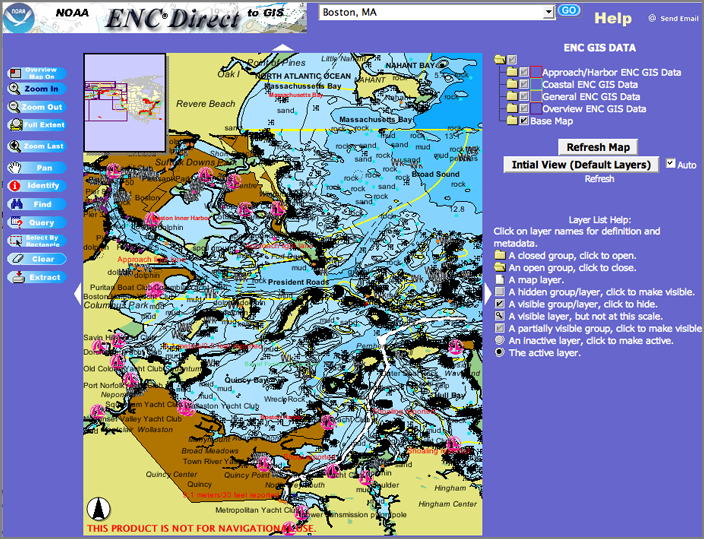
04.01.2007 01:29
Dijkstra/Astar path finding functions in python
It is very interesting to see this python code be released on the
python cheeseshop. I just got slammed for bringing up A* in the
question time after a recent speaker. I was surprise how strong a
reaction I got. I am not sure why.
Dijkstar: Dijkstra/A* path finding functions
Dijkstar: Dijkstra/A* path finding functions
Dijkstar is an implementation of Dijkstra's single-source shortest-paths algorithm. If a destination node is given, the algorithm halts when that node is reached; otherwise it continues until paths to all nodes are found. . Accepts an optional weighting function that will be called on every iteration. . Also accepts an optional heuristic function that is used to push the algorithm toward a destination instead of fanning out in every direction. Using such a heuristic function converts Dijkstra to A* (and this is where the name "Dijkstar" comes from). . Performance is decent on a graph with 100,000+ nodes. Runs in around .5 seconds on average .